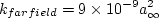

Results are shown here from 2 compressible codes
so that the user may compare their own compressible code results. Multiple grids were
used so the user can see trends with grid refinement. Different codes will behave
differently with grid refinement depending on many factors (including code order of accuracy
and other numerics),
but it would be expected that as the grid is refined the results
will tend toward an "infinite grid" solution that is the same.
Be careful when comparing details: any differences in boundary conditions or flow conditions
may affect results.
Two independent compressible RANS codes,
CFL3D and FUN3D, were used to compute this
zero-pressure-gradient flat plate flow with the Menter baseline transport model
(version BSLm - see full description on
Menter Baseline Turbulence Model page). The full series of 5 grids were used.
CFL3D is a cell-centered structured-grid code, and FUN3D
is a node-centered unstructured-grid code (FUN3D can solve on mixed element grids, so this case
was computed on the same hexahedral grid used by CFL3D). Both codes used Roe's Flux Difference
Splitting and a UMUSCL upwind approach. In CFL3D its standard UMUSCL (kappa=0.33333) scheme was
used, whereas in FUN3D the option UMUSCL 0.5 was used. Both codes were run with
full Navier-Stokes (as opposed to thin-layer, which is CFL3D's default mode of operation),
and both codes used first-order upwinding for the advective terms of the turbulence model.
Details about the codes can be found on their respective websites,
the links for which are given on this site's
home page.
The codes were not run to machine-zero iterative convergence, but an attempt was made to converge
sufficiently so that results of interest were well within normal engineering tolerance and
plotting accuracy. For example, for CFL3D the density residual was typically
driven down below 10-13. It should be kept in mind that many of the files given below
contain computed values directly from the codes,
using a precision greater than the convergence tolerance (i.e., the values
in the files are not necessarily as precise as the number of digits given).
Note that in both CFL3D and FUN3D, the production term

is approximated by

which is exact for incompressible flow. For this particular low-speed flow, the approximation is
very accurate.
(Previously on this page the results were reported as BSL solutions, but more properly they should be referred
to as BSLm because of this approximation and the fact that the
 term is ignored in tau_ij in the momentum and energy equations.)
term is ignored in tau_ij in the momentum and energy equations.)
For the CFL3D and FUN3D tests reported below, the turbulent inflow boundary conditions used for BSLm
were the following:
- 

The above two equations represent the "standard" BSLm boundary condition
values used by both CFL3D and FUN3D, chosen to achieve
a not-too-low level of freestream
turbulent kinetic energy, a not-too-severe rate of freestream turbulence decay,
and a reasonable level of freestream turbulent eddy viscosity of
 .
.
For the interested reader, typical input files for this problem are given here:
CFL3D V6.7:
FUN3D:
The following plot shows the convergence of the wall skin friction coefficient at x=0.97008 with
grid size for the two codes.
In the plot the x-axis is plotting 1/N1/2, which is proportional to
grid spacing (h).
At the left of the plot, h=0 represents an infinitely fine grid.
As can be seen, both codes go toward approximately the same result on an infinitely refined grid.
Using the uncertainty estimation procedure from the Fluids Engineering Division of the ASME (Celik, I. B.,
Ghia, U., Roache, P. J., Freitas, C. J., Coleman, H., Raad, P. E.,
"Procedure for Estimation and Reporting of Uncertainty Due
to Discretization in CFD Applications," Journal of Fluids Engineering, Vol. 130, July 2008, 078001, https://doi.org/10.1115/1.2960953), described in Summary of Uncertainty Procedure,
the finest 3 grids yield the following for skin friction coefficient at x=0.97:
| Code |
Computed apparent order, p |
Approx rel fine-grid error, ea21 |
Extrap rel fine-grid error, eext21 |
Fine-grid convergence index, GCIfine21 |
| CFL3D |
1.20 |
0.246% |
0.190% |
0.238% |
| FUN3D |
1.36 |
0.283% |
0.180% |
0.226% |
The data file that generated the above plot is given here:
cf_convergence_bsl.dat.
Note that in this particular flat plate case, when looking at the total integrated drag coefficient on the plate,
formal order-property convergence may not be generally achievable. This is because the skin friction
(which is the only contributor to the drag in this case)
is singular (tends toward infinity) at the leading edge. The finer the grid, the more nearly singular
the local behavior on a finite grid. FUN3D, which is a node-centered code, solves for flow variables
at the leading edge, so it may be more sensitive to the singular behavior than CFL3D, which is a
cell-centered code. There also appears to be some locally minor
anomalous behavior at the aft end of the plate, which is likely a function of
how each code handles the interaction of the solid wall boundary condition with the
outflow pressure boundary condition near the bottom right corner of the grid.
Nonetheless, both codes are tending toward a similar integrated drag coefficient value
as the grid is refined.
Using the uncertainty estimation procedure from the Fluids Engineering Division of the ASME (Celik, I. B.,
Ghia, U., Roache, P. J., Freitas, C. J., Coleman, H., Raad, P. E.,
"Procedure for Estimation and Reporting of Uncertainty Due
to Discretization in CFD Applications," Journal of Fluids Engineering, Vol. 130, July 2008, 078001, https://doi.org/10.1115/1.2960953), described in Summary of Uncertainty Procedure,
the finest 3 grids yield the following for drag coefficient:
| Code |
Computed apparent order, p |
Approx rel fine-grid error, ea21 |
Extrap rel fine-grid error, eext21 |
Fine-grid convergence index, GCIfine21 |
| CFL3D |
0.70 |
0.787% |
1.236% |
1.564% |
| FUN3D |
1.07 |
0.773% |
0.695% |
0.875% |
The data file that generated the above plot is given here:
drag_convergence_bsl.dat.
The surface skin friction coefficient from both codes on the finest 545 x 385 grid
over the entire plate is shown in the next plot. Again, local anomalous behavior exists near the leading
edge (x=0) due to singular behavior of the solution,
and near the trailing edge (x=2) most likely due to boundary condition
interaction. These behaviors differ for the two codes, and result in small local deviations that
can be seen when zoomed into the two locations. In addition, both codes indicate turbulence
"activation" at slightly different locations very near the leading edge, 0 < x < 0.01
("activation" is where the turbulence model transitions
on its own from laminar to turbulent). But both codes are seen to yield nearly identical results
over most of the plate.
The data file that generated the above plot is given here:
cf_plate_bsl.dat.
The nondimensionalized eddy viscosity contours, k contours, and omega contours
from the two codes on the finest 545 x 385 grid are shown
in the following plots (y-scale expanded for clarity).
Results from the two codes on this grid are essentially indistinguishable.
(Note legends do not necessarily reflect min and max values.)
The data files that generated the above plots are given here:
mut_contours_cfl3d_bsl.dat.gz (1.4 MB),
k_contours_cfl3d_bsl.dat.gz (1.4 MB),
omega_contours_cfl3d_bsl.dat.gz (1.4 MB) (structured,
at cell centers) and
mut_contours_fun3d_bsl.dat.gz (2.5 MB),
k_contours_fun3d_bsl.dat.gz (2.5 MB),
omega_contours_fun3d_bsl.dat.gz (2.6 MB) (unstructured,
at grid points). Note that these are all gzipped
Tecplot
formatted files, so you must either have Tecplot or know how to read their format in order to use these
files.
Using the finest 545 x 385 grid, an extracted nondimensional eddy viscosity profile at
x=0.97 is shown below, along with a plot of the maximum nondimensional
eddy viscosity as a function of x.
The data file that generated the eddy viscosity profile at x=0.97 is given here:
mut_0.97_bsl.dat.
The nondimensional k and omega profiles at x=0.97008 from the 545 x 385 grid are shown in the following plots.
Note that the sharp behavior of these variables near the boundary layer edge
is one of the characteristics of this model (as well as others - see, e.g., Hellsten, A., "New Two-Equation
Turbulence Model for Aerodynamic Applications," PhD Thesis, Helsinki University of Technology,
Espoo, Finland, Feb 2004, pp. 96-103, available from
link to TKK dissertations). In cases where the grid resolution is not
as fine as it is here, numerical damping generally acts to smooth the sharp
behavior.
The data file that generated the nondimensional k and omega profiles at x=0.97 is given here:
omega_k_0.97_bsl.dat.
In terms of inner wall variables, u+ and y+, the finest grid yields the following results, which
are shown at two x-locations of x=0.97008 and x=1.90334. The
law-of-the-wall theory with kappa=0.41 and B=5.0 is also shown
(see White, F. M., Viscous Fluid Flow, McGraw-Hill Book Company, New York,
1974, p. 472).
The data file that generated the above plot is given in
flatplate_u+y+_bsl.dat for the CFD (extracted only for CFL3D), and in
u+y+theory.dat for the theory (other theoretical curves,
not shown in the plot, are also included in this latter file).
Standard velocity profiles are shown at the same two x-locations of x=0.97008 and x=1.90334 for
the finest grid in the following plot.
The data file that generated the above plot is given in
flatplate_u_bsl.dat (extracted only for CFL3D).
Return to: 2D Zero Pressure Gradient Flat Plate Verification Case Intro Page
Return to: Turbulence Modeling Resource Home Page
Privacy Act Statement
Accessibility Statement
Responsible NASA Official:
Ethan Vogel
Page Curator:
Clark Pederson
Last Updated: 03/24/2021